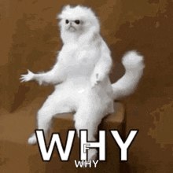

SOFTWARE LIVRE
em tempos de
Aprisionamento Digital
Quem sou eu?
Alessandro Feitoza
- Professor de códigos e outras computarias
- Programador/Dev/Severino
- Cria, e por isso, Militante do MSL

FLISoL
Festival Latino Americano de Instalação de Software Livre
AGENDA
- Contexto Histórico
- A Causa
- O Movimento
- TecnoPolitica
- Comunidades
- Case da Cultura Digital do Ceará
Linha do Tempo da Era Digital
/ Computadores pessoais
Linha do Tempo da Era Digital
Efeito bolha
A CAUSA
Computadores
- Hardware
- Software
No inicio dos tempos tecnológicos, ao adquirir um computador, assim como o Hardware, o Software era aberto
Eis que as empresas resolvem "fechar" o código
Com a proposta de mudar isso
Mas o Stallman não é relevante, A Causa é!
Heróis falham,
Ideias Resistem ✊🏽
Movimento Software Livre
"Aquele software que respeita a liberdade e senso de comunidade dos usuários."
http://www.gnu.org/philosophy/free-sw.html
O MOVIMENTO
Radical
tem origem no latim "radix" (raiz) e significa "relativo à raiz" ou "de raiz". Em português, pode ter diversos significados, incluindo:
- Social
- Filósofico
- Politico
- Educacional
- e Necessário
Politica
Procedimentos relativos a "Polis", organizando os interesses individuais e coletivos.
4 Liberdades Essenciais
- Usar para qualquer* propósito
- Fazer Copiar para ajudar o próximo
- Conhecer e Adaptar
- Distribuir as modificações
"Sim macho, mas o que diabo eu tenho a ver com isso?"
Os sintomas do Sistema Politico poderiam ser amenizados com uso de Software Livre
Quais Softwares vocês usam?
TECNO POLITICA
A gente tá colocando dentro de casa (Brasil/Ceará/Russas) códigos que a gente não tem como saber o que fazem, porque não são auditáveis.
Coleta de dados?
- Dados Comportamentais
- Dados de Engajamento/Interação
- Dados de Localização
- Perfil Psicológico
- Afiliação politica/religiosa
Algoritmos
ECHO CHAMBERS
FILTER BUBBLES
a culpa não é do Xandão!
Software é lanterna, não muleta!
CASO CEARÁ
- Desde 2011 o Estado aposta forte na educação profissional gratuita
- 132 EEEPs
- 22 escolas entre as 100 melhores públicas
- Um dos Estados que mais crescem no Brasil
- Fonte de Renovação
Anahuac de Paula Gil
DÚVIDAS?
Referências
@alessandro_feitoza
https://linkedin.com/in/AlessandroFeitoza
https://alessandrofeitoza.github.io/slides